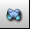
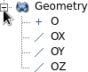
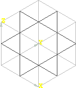
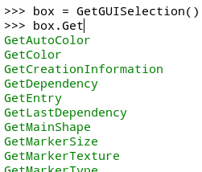
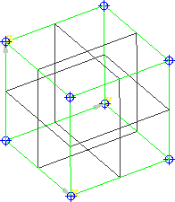
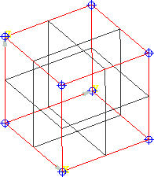
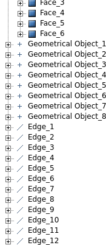

cfdmsh 4.0 documentation
cfdmsh 4.0 documentation cfdmsh 4.0 documentation

The purpose of this tutorial is to give basic knowledge about the manipulatio of the Salome GUI as well as to give example of fast interaction with its Python console thanks to cfdmsh.
The following cfdmsh functions will be used:
NB: This tutorial was tested on Salome 7.7.1 on Linux with the following settings:
File > Preferences... > Geometry > Default display mode > Wireframe.
File > Preferences... > Geometry > Hide input objects from viewer > OFF.
Content of this mini-tutorial:

File > New
Click on  in the toolbar

New Entity > Primitives > Box → Apply and Close

| Action | Keys |
|---|---|
| Zoom | [Ctrl] + Left button |
| Rotate | [Ctrl] + Right button |
| Rotate perpendicular to the screen | [Ctrl] + Right button far from the center of the 3D window |
| Pan | [Ctrl] + Middle button |
Select "Box_1" → New Entity > Explode →
Set "Sub-shapes Type" to "Face" → Apply and Close
Select "Box_1" → Right-click > Show Only Children
| Action | Keys |
|---|---|
| Select one entity | Left button |
| Select several entities |
[Shift] + Left button * n
or Left button + drag or Right button [+ drag + Left button] * n |
[Ctrl] + [T] → Select the "cfdmsh.py" file on your computer
In the Python console, type:
PrintDefinedFunctions( )
or:
pdf( )
In the Python console, type:
PrintDefinedFunctions( 1 )
or:
pdf( 1 )
In the Python console, type:
help( RebuildFace )
or:
help( rf )
Select "Box_1" → In the Python console, type:
box = GetGUISelection( )
or:
box = ggs( )
In the Python console, type this without pressing [Return]:
box.Get
→ press [Tab] → Scroll down your Python console using your mouse wheel

In the Python console, type [Esc], then:
sub_shapes = GetSubShapes( box )
or:
sub_shapes = gss( box )
The object returned by the GetSubShapes function is a list organized as following:
| Variable | Description |
|---|---|
| sub_shapes[0] | List of 0D sub-shapes (vertexes) |
| sub_shapes[1] | List of 1D sub-shapes (edges) |
| sub_shapes[2] | List of 2D sub-shapes (faces) |
| sub_shapes[3] | List of 3D sub-shapes (volumes) |
| sub_shapes[-1] | The main shape itself (here, the box) |
In the Python console, type:
AddToStudy( sub_shapes[0] )
or:
ats( sub_shapes[0] )

In the Python console, type:
AddToStudy( sub_shapes[1], "Edge" )
or:
ats( sub_shapes[1], "Edge" )


You can close this study.
END OF THIS TUTORIAL
cfdmsh 4.0 documentation
tougeron-cfd.com © 2016